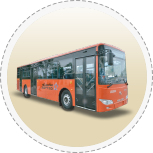

SAPTCO provides public transport service through a network of lines covering the main cities in the Kingdom (Riyadh - Jeddah - Makkah) from 5:30 am to 11:30 pm.

Bus Design
- Configured buses, comfortable seats and overhead handles.
- Three doors are available in each bus to ensure ease of boarding and disembarking passengers, taking into account the rear entrance for families.
- Equipping most buses with electronic payment devices.
- Allocating a group of buses equipped for people with special needs to facilitate the use of public transportation with ease and ease.
- Surveillance cameras (CCTV).
- The highest international safety and security standards are applied in SAPTCO buses (fire extinguishers - emergency exits - a handle to break the glass in case of emergency - external safety keys for doors).